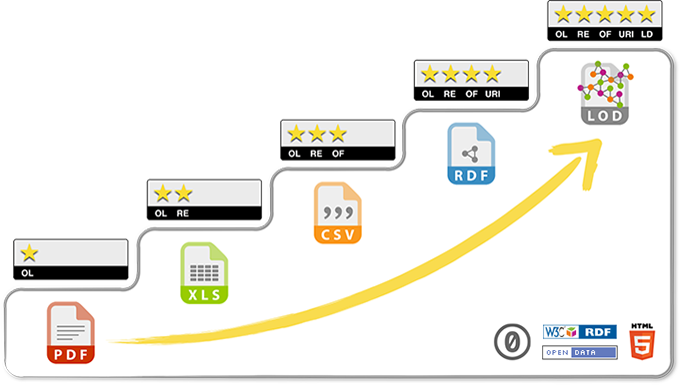

Data Management in the
Research Environment
Research Environment
Data Publication: Repositories and Sharing
Library Workshop Series
Library Workshop Series
Dr. Timothy Norris - Research Data Scientist - tnorris@miami.edu
some things to talk about

Working with Data Workshop Series
Data Sharing and Reuse

{kind=link}
“Sharing data from one laboratory to another—or even within a laboratory—takes time and effort, but there are also psychological, cultural and technological barriers to doing so.”
| Sharing analysis scripts and data sets | Frequency | percent (valid) |
| 1. Willing to share publicly | 120 | 25.9% |
| 2. Willing to share under access control | 98 | 21.1% |
| 3. Willing to share only on request | 163 | 35.1% |
| 4. Not willing to share | 83 | 17.9% |
| Sum | 464 | 100% |
| Source: SOEP User Survey 2013, own calculations | ||
adapted from doi:10.1371/journal.pone.0118053.t005
Age
Control
Resource
Returns
Discipline
Control
Resource
Returns
Discipline
Storage
Archives
Preservation
Curation
adapted from: Whitmire, Amanda L. (2014). Research Data Management Curriculum, Lecture 15: Data Preservation and DataONE education modules https://www.dataone.org/education-modules.
Well-curated data are...
- Easier for fellow scholars and future collaborators to understand
- More likely to be trusted
- The research they represent are more likely to be reproducible
- More likely to be properly cited
- Represent potential cost-savings
- Findable, accessible, interoperable, and reusable, or FAIR (Wilkinson et. al, 2016)
Wilkinson, M. D., M. Dumontier, I. J. Aalbersberg, G. Appleton, M. Axton, A. Baak, N. Blomberg, J.-W. Boiten, L. B. da Silva Santos, P. E. Bourne, J. Bouwman, A. J. Brookes, T. Clark, M. Crosas, I. Dillo, O. Dumon, S. Edmunds, C. T. Evelo, R. Finkers, A. Gonzalez-Beltran, A. J. G. Gray, P. Groth, C. Goble, J. S. Grethe, J. Heringa, P. A. C. ’t Hoen, R. Hooft, T. Kuhn, R. Kok, J. Kok, S. J. Lusher, M. E. Martone, A. Mons, A. L. Packer, B. Persson, P. Rocca-Serra, M. Roos, R. van Schaik, S.-A. Sansone, E. Schultes, T. Sengstag, T. Slater, G. Strawn, M. A. Swertz, M. Thompson, J. van der Lei, E. van Mulligen, J. Velterop, A. Waagmeester, P. Wittenburg, K. Wolstencroft, J. Zhao and B. Mons (2016). The FAIR Guiding Principles for scientific data management and stewardship. Scientific Data, 3, 160018. doi: 10.1038/sdata.2016.18.

FAIR Data
FFindable rich metadata with assigned DOI
AAccessible Metadata and data available across open protocols
IInteroperable Data and metadata represented with standard or easily understood data structures
RReusable metadata includes provenance and uses community accepted descriptions
AAccessible Metadata and data available across open protocols
IInteroperable Data and metadata represented with standard or easily understood data structures
RReusable metadata includes provenance and uses community accepted descriptions

Wilkinson, M. D., M. Dumontier, I. J. Aalbersberg, G. Appleton, M. Axton, A. Baak, N. Blomberg, J.-W. Boiten, L. B. da Silva Santos, P. E. Bourne, J. Bouwman, A. J. Brookes, T. Clark, M. Crosas, I. Dillo, O. Dumon, S. Edmunds, C. T. Evelo, R. Finkers, A. Gonzalez-Beltran, A. J. G. Gray, P. Groth, C. Goble, J. S. Grethe, J. Heringa, P. A. C. ’t Hoen, R. Hooft, T. Kuhn, R. Kok, J. Kok, S. J. Lusher, M. E. Martone, A. Mons, A. L. Packer, B. Persson, P. Rocca-Serra, M. Roos, R. van Schaik, S.-A. Sansone, E. Schultes, T. Sengstag, T. Slater, G. Strawn, M. A. Swertz, M. Thompson, J. van der Lei, E. van Mulligen, J. Velterop, A. Waagmeester, P. Wittenburg, K. Wolstencroft, J. Zhao and B. Mons (2016). The FAIR Guiding Principles for scientific data management and stewardship. Scientific Data, 3, 160018. doi: 10.1038/sdata.2016.18.
Tangible Actions
Data Curation Network - Mnemonic for Curation
CCheck files and read documentation (risk mitigation, file inventory, appraisal/selection)
UUnderstand the data, or try to ... (run files/environment, QA/QC issues, readmes)
RRequest missing information or changes (tracking provenance of processes and changes)
AAugment metadata for findability (DOIs, metadata standards, discoverability)
TTransform file formats for reuse (data preservation, conversion tools, data viz)
EEvaluate for FAIRness (licenses, responsibility standarads, metrics for tracking)
DDocument the curation process
UUnderstand the data, or try to ... (run files/environment, QA/QC issues, readmes)
RRequest missing information or changes (tracking provenance of processes and changes)
AAugment metadata for findability (DOIs, metadata standards, discoverability)
TTransform file formats for reuse (data preservation, conversion tools, data viz)
EEvaluate for FAIRness (licenses, responsibility standarads, metrics for tracking)
DDocument the curation process
Data Curation Network (2018). "Checklist of CURATED Steps Performed by the Data Curation Network." https://datacurationnetwork.org
DOIs and ORCIDs


Work together to connect research to researcher
- Digital Object Identifiers (DOIs)
- Permanent identifiers (links) to online resources
- Provided by resolving service (https://doi.org/)
- All repositories provide these for your data
- UM is a member of DataCite who provides our DOIs
- ORCID
- https://orcid.org/
- like a Digital Object Identifier (DOI) for people
- the authoritative ID for researchers
Work together to connect research to researcher
Data Citation
- Kochanski, A., & Krueger, S. (2018). SAM model output files from A. Chandra, P. Zuidema, S. Krueger, A. Kochanski, S. P. de Szoeke and J. Zhang,2018: "Moisture distributions in tropical cold pools from equatorial Indian Ocean observations and cloud-resolving simulations”, J. Geophys. Res. - Atmos. [Data set]. University of Miami Libraries. https://doi.org/10.17604/5D4A-QJ11
- Norris, T. (2015). Cordillera Huayhuash Water Quality 2010-2011 [Data set]. UC Santa Cruz. https://doi.org/10.7291/d11592
- World Bank, World Development Indicators. (2016). Firms using banks to finance working capital (% of firms) [Data file]. Retrieved from http://data.worldbank.org/indicator/IC.FRM.BKWC.ZS
- JBureau of Labor Statistics. (2016). Consumer price index - all urban consumers, 1956-2016 [Time series]. Retrieved from http://data.bls.gov
Repository Identification
Repository Directories
- Registry of Research Data Repositories http://www.re3data.org/
- DataCite Repository Finder https://repositoryfinder.datacite.org/
- The Directory of Open Access Repositories http://www.opendoar.org/
- The Open Access Directory – Disciplinary Repositories http://oad.simmons.edu/oadwiki/Disciplinary_repositories
Archive/repository Identification
Considerations
|
Locations
archive vs. sharing mechanism
|
adapted from Whitmire, Amanda L. (2014). Research Data Management Curriculum, Lecture 15: Data Preservation. Oregon State University Libraries. Retrieved 11/04/2015 from: http://figshare.com/articles/GRAD521_Research_Data_Management_Lectures/1003835
Archive on your own
Costs (100 GB dataset)
- You buy & manage hardware, replication, backups and networking (if applicable, for offsite access)
- OK for unrestricted, sensitive (FERPA), and protected data
Costs (100 GB dataset)
| $ | Ranges (but generally cheap) |
Archive w/department IT
Costs (100 GB dataset)
- Depends on department IT
Costs (100 GB dataset)
| $ | Under development??? (check your dept.) |
Archive @ University of Miami Institutional Repository
Costs (100 GB dataset)
- Storage in Bepress Digital Commons (commercial site that UM subscribes to)
- Remotely accessible (restrictions/embargoes possible)
- OK for unrestricted data. Not compliant for sensitive (FERPA) and protected data
Costs (100 GB dataset)
| $ | ($0/year * 100 GB) = $0 |
NOTE: THE COST IS A PLACEHOLDER. THIS IS NOT BINDING
Archive in discipline-specific repository
Costs (100 GB dataset)
- Replicated, archive-quality storage
- Data curation throughout ingest & archive period
- Data in context with other datasets
Costs (100 GB dataset)
| $ | Depends |
Disciplinary Repositories (some)
- Biology and Life Sciences - Dryad
http://www.datadryad.org/repo/ - Knowledge Network for Biodiversity
https://knb.ecoinformatics.org/ - Data Observation Network for Earth
https://www.dataone.org/ - Snow and Ice Data Center
https://nsidc.org/ - Biological and Chemical Oceanography Data Management Office (BCO-DMO)
http://www.bco-dmo.org/ - National Centers for Environmental Information
https://www.ncei.noaa.gov/ - Inter-University Consortium for Political and Social Research
http://www.icpsr.umich.edu/ - Collaborative Research in Computational Neuroscience
https://crcns.org/
3rd party repository platforms
Costs (100 GB dataset)
- easy and hassle free
- highly visible and publically available
- longevity is unknown
Costs (100 GB dataset)
| $ | mostly free |
The deposit package
- organized data (correct formats)
- technical metadata (standard?)
- project metadata: README.txt
- licensing information
- checksum
- can be in a zipfile (like in the University of Miami Scholarly Repository)
physics data example
- other formats (depends on repository)
ecology data example (KNB)
Roles and Responsibilities
Researcher (‘data creator’)
|
Data center or repository
|
Data Curation Activities
Code review
Contextualize
Documentation
Embargo
File Format Transformations
Persistent Identifier
Quality Assurance
Use Analytics
File renaming
File Inventory or Manifest
File validation
Metadata
Metadata Brokerage
Rights Management
Risk Management
…...more
47 Data Curation Activities Identified
Full list of activities: http://bit.ly/DCNcurationActivities
DCN Researcher Study 2018 (n=91)
Johnston, L. R., Carlson, J., Hudson-Vitale, C., Imker, H., Kozlowski, W., Olendorf, R., & Stewart, C. (2018). How Important is Data Curation? Gaps and Opportunities for Academic Libraries. Journal of Librarianship and Scholarly Communication, 6(1), eP2198. DOI: https://doi.org/10.7710/2162-3309.2198
Documentation
Chain of custody
Chain of custody
Emulation
Restricted Access
Contact Information
Full-Text Indexing
Restricted Access
Contact Information
Full-Text Indexing
DCN Researcher Study 2016 (n=91)
Most Important Activities* (4 out of 5)
- (Create) Documentation (4.6)
- Secure Storage (4.4)
- Quality Assurance (4.3)
- Persistent Identifier (4.3)
- Software Registry (4.1)
- Data Visualization (4.0)
- File Audit (4.0)
- (Create) Metadata (4.0)
- Versioning (3.9)
- Contextualization (3.9)
- Code Review (3.9)
- File Format Transformations (3.9)
Not Happening for Majority of Researchers
- Persistent Identifier (37% happens)
- Software Registry (41% happens)
- File Audit (16% happens)
- Contextualization (38% happens)
- Code Review (38% happens)
Happening, but not satisfactorily
- Documentation (26% satisfied)
- Secure storage (38% satisfied)
- Quality Assurance (14% satisfied)
- Data Visualization (12.5% satisfied)
- Metadata (29% satisfied)
- Versioning (13% Satisfied)
- File Format Transformations (29% satisfied)
Johnston, L. R., Carlson, J., Hudson-Vitale, C., Imker, H., Kozlowski, W., Olendorf, R., & Stewart, C. (2018). How Important is Data Curation? Gaps and Opportunities for Academic Libraries. Journal of Librarianship and Scholarly Communication, 6(1), eP2198. DOI: https://doi.org/10.7710/2162-3309.2198
DCN Researcher Study 2016 (n=91)
Most Important Activities* (4 out of 5)
- (Create) Documentation (4.6)
- Secure Storage (4.4)
- Quality Assurance (4.3)
- Persistent Identifier (4.3)
- Software Registry (4.1)
- Data Visualization (4.0)
- File Audit (4.0)
- (Create) Metadata (4.0)
- Versioning (3.9)
- Contextualization (3.9)
- Code Review (3.9)
- File Format Transformations (3.9)
Not Happening for Majority of Researchers
- Persistent Identifier (37% happens)
- Software Registry (41% happens)
- File Audit (16% happens)
- Contextualization (38% happens)
- Code Review (38% happens)
Happening, but not satisfactorily
- Documentation (26% satisfied)
- Secure storage (38% satisfied)
- Quality Assurance (14% satisfied)
- Data Visualization (12.5% satisfied)
- Metadata (29% satisfied)
- Versioning (13% Satisfied)
- File Format Transformations (29% satisfied)
Johnston, L. R., Carlson, J., Hudson-Vitale, C., Imker, H., Kozlowski, W., Olendorf, R., & Stewart, C. (2018). How Important is Data Curation? Gaps and Opportunities for Academic Libraries. Journal of Librarianship and Scholarly Communication, 6(1), eP2198. DOI: https://doi.org/10.7710/2162-3309.2198
DCN Researcher Study 2016 (n=91)
Most Important Activities* (4 out of 5)
- (Create) Documentation (4.6)
- Secure Storage (4.4)
- Quality Assurance (4.3)
- Persistent Identifier (4.3)
- Software Registry (4.1)
- Data Visualization (4.0)
- File Audit (4.0)
- (Create) Metadata (4.0)
- Versioning (3.9)
- Contextualization (3.9)
- Code Review (3.9)
- File Format Transformations (3.9)
Not Happening for Majority of Researchers
- Persistent Identifier (37% happens)
- Software Registry (41% happens)
- File Audit (16% happens)
- Contextualization (38% happens)
- Code Review (38% happens)
Happening, but not satisfactorily
- Documentation (26% satisfied)
- Secure storage (38% satisfied)
- Quality Assurance (14% satisfied)
- Data Visualization (12.5% satisfied)
- Metadata (29% satisfied)
- Versioning (13% Satisfied)
- File Format Transformations (29% satisfied)
Johnston, L. R., Carlson, J., Hudson-Vitale, C., Imker, H., Kozlowski, W., Olendorf, R., & Stewart, C. (2018). How Important is Data Curation? Gaps and Opportunities for Academic Libraries. Journal of Librarianship and Scholarly Communication, 6(1), eP2198. DOI: https://doi.org/10.7710/2162-3309.2198
Licensing
- Stuff: Creative Commons <> Copyright
- Software: Open Source <> Proprietary
- Data: Open Data Commons <> Proprietary
Some open source licenses
Apache License, 2.0 (Apache-2.0)
BSD 3-Clause "New" or "Revised" license (BSD-3-Clause)
BSD 2-Clause "Simplified" or "FreeBSD" license (BSD-2-Clause)
GNU General Public License (GPL)
GNU Library or "Lesser" General Public License (LGPL)
MIT license (MIT)
Mozilla Public License 2.0 (MPL-2.0)
BSD 3-Clause "New" or "Revised" license (BSD-3-Clause)
BSD 2-Clause "Simplified" or "FreeBSD" license (BSD-2-Clause)
GNU General Public License (GPL)
GNU Library or "Lesser" General Public License (LGPL)
MIT license (MIT)
Mozilla Public License 2.0 (MPL-2.0)


Open Data Commons
http://opendatacommons.org/licenses/
Licenses
Licenses
- Public Domain Dedication and License (PDDL) — “Public Domain for data/databases”
- Attribution License (ODC-By) — “Attribution for data/databases”
- Open Database License (ODC-ODbL) — “Attribution Share-Alike for data/databases”
Open
?
Open Data
“data is open if anyone is free to use, reuse, and redistribute it – subject only, at most, to the requirement to attribute and/or share-alike.”
Pollack, R (2006). ‘The value of the public domain’, Institue for Public Policy Research, http://www.ippr.org/publication/55/1526/the-value-of-the-public-domain, quoted from
Kitchin, R (2014). The Data Revolution. Sage, Los Angeles. P. 49-50.
Kitchin, R (2014). The Data Revolution. Sage, Los Angeles. P. 49-50.
Open Data
opendefinition.org *
- Accessible
- Redistributable (w or w/o license)
- Reusable
- No Technological restrictions
- Attribution
- Integrity maintained
- Non-discriminatory
- License is redistributable, non-specific, and non-restrictive for derivative works
www.opengovdata.org °
- Complete
- Primary
- Timely
- Accessible
- Machine processable
- Non-discriminatory
- Non-proprietary formats
- License Free
- Open for Compliance Review
* As a sub-project of the open knowledge foundation, okfn.org
° From a 2007 open data workshop. Influenced heavily by Larry Lessig
Adapted from Kitchin, R (2014). The Data Revolution. Sage, Los Angeles. P. 50-51
Linked Open Data

Berners-Lee, http://5stardata.info/en/, accessed 03-27-2016
| * | make your stuff available on the Web (whatever format) under an open license |
| ** | make it available as structured data (e.g., Excel instead of image scan of a table) |
| *** | make it available in a non-proprietary open format (e.g., CSV as well as of Excel) |
| **** | use URIs to denote things, so that people can point at your stuff |
| ***** | link your data to other data to provide context |
Adapted from Berners-Lee, http://5stardata.info/en/, accessed 03-27-2016
Open Data in the Research Environment
Benefits
- Reproduction
- Meta-analyses
- Scientific Inquiry Approaches
- New Questions
- Meet Requirements
- Increase Impact/Visibility
Barriers
- Competition
- Lack of recognition
- Difficult and time consuming
- Sensitivity issues
Open Data in the Research Environment
Competition > embargos
Lack of recognition > citations
Difficult and time consuming > data repositories
Sensitivity issues > restrict access
Lack of recognition > citations
Difficult and time consuming > data repositories
Sensitivity issues > restrict access
Open Data in the World Writ Large
Benefits
- Transparency
- Informed choice (democracy)
- Improved efficiencies/productivities
- Organizational Branding (like “greening” of a business)
- Commercial Value
Barriers
- Makes valuable resources selectively accessible
- May be co-opted by corporate business for profit
- Should businesses “open” their data?
Open Data in the World Writ Large
Sustainability (who pays)?
Open Data %LIKE% Free Trade?
Who does it empower (social justice)?
Who does the work for whom?
Data Shadows and Dataveillance
Open Data %LIKE% Free Trade?
Who does it empower (social justice)?
Who does the work for whom?
Data Shadows and Dataveillance
What about data in the research environment
- What happens if a researcher leaves the institution?
- What if someone needs access to my data?
- How long do I have to keep them and how should I discard them?
- How do I set policy for my team, my lab or myself?
- But I’m collaborating: whose policy wins?
- What if there isn’t a policy?
- What help can I get?
Briney, K., Goben, A., & Zilinski, L. (2015). Do You Have an Institutional Data Policy? A Review of the Current Landscape of Library Data Services and Institutional Data Policies. Journal of Librarianship and Scholarly Communication, 3(2), eP1232. http://dx.doi.org/10.7710/2162-3309.1232
| Peer Institutions | last revised | responsible party | ownership stated | "research data" defined | data retention (min.) | data access | PI moves | disputes | take-down | notes |
| Case Western Reserve University | 2000 | X | X | 3 years | X | X | X | X | ||
| New York University | 2010 | X | X | X | 3 years | X | X | X | ||
| University of Rochester | 2014 | X | X | X | 3 years | X | X | |||
| University of Miami | 2014 | 7 years | in faculty manual | |||||||
| Emory University | 2007 | X | 7 years | X | in faculty manual | |||||
| Brandeis University | 2003 | X | in IP policy | |||||||
| University of Southern California | 2001 | X | in IP policy | |||||||
| Carnegie Mellon University | ||||||||||
| Syracuse University | ||||||||||
| Tulane University | ||||||||||
| Vanderbilt University |
Norris, T., and S. Shreeves. “Data Curation Initiative: 2015-16 Report and Recommendations.” University of Miami Libraries. Miami, FL.
| Non-Peer Institutions | last revised | responsible party | ownership stated | "research data" defined | data retention (min.) | data access | PI moves | disputes | take-down | notes |
| University of Kentucky | 2011 | X | X | X | 5 years | X | X | X | X | |
| Johns Hopkins University | 2008 | X | X | X | 5 years | X | X | |||
| Duke University | 2007 | X | X | X | 5 Years | X | ||||
| The University of Edinburgh | 2011 | X | X | X | not really a policy | |||||
| University of Pittsburg | 2009 | X | X | X | 7 years | X | X | |||
| Pennsylvania State | 2003 | X | X | X | 5 years | X | X | set of guidelines | ||
| Stanford | 1997 | X | X | X | 3 years | X | X |
Norris, T., and S. Shreeves. “Data Curation Initiative: 2015-16 Report and Recommendations.” University of Miami Libraries. Miami, FL.
UM Faculty Manual
Innovations: patentable or un-patentable inventions, discoveries, processes, compositions, research tools, data, ideas, databases, know-how, copyrightable works that are not scholarly or artistic Creations and tangible property, including biological organisms, engineering prototypes, drawings, and software created, conceived or made by Applicable Personnel within their normal duties (including clinical duties), course of studies, field of research or scholarly expertise or making more than Incidental Use of University’s resources. (p. 136)
3.3 Innovations are owned by the University; revenues derived from commercialization of Innovations will be shared with the Applicable Personnel as detailed in Section VI. (p. 138)
UM Faculty Manual
- Page 21 – all data with respect to hiring, promotion, and tenure of faculty
- Page 26 – senate appointments and voting
- Page 124 – Policies and Procedures of the University of Miami Relating to Allegations of Misconduct in Research
In order to respond to allegations regarding the integrity of any published report, adequate records of the original protocols and research records, including all raw data, must be preserved for at least seven years (or longer if required by the funding agency), so they can be made available for inspection......Fabrication is making up data or results and recording or reporting them. Falsification is manipulating research materials, equipment, or processes, or changing or omitting data or results such that the research is not accurately represented in the research record.
Grad Student Handbook
The University of Miami expects all graduate students to adhere to the highest standards of ethics and academic integrity. All forms of academic fraud are strictly prohibited. These include, but are not limited to, plagiarism, cheating, collusion, falsification, violation of professional ethics, or misrepresentation of research data. Students certify that all work (whether an examination, dissertation, thesis, research paper, research project, form of creative expression, experimental data, or any other academic undertaking) submitted for evaluation, presentation, or publication meets these standards. (p. 16)
Open Source
1. Free Redistribution
2. Source Code
3. Derived Works
4. Integrity of The Author's Source Code
5. No Discrimination Against Persons or Groups
6. No Discrimination Against Fields of Endeavor
7. Distribution of License
8. License Must Not Be Specific to a Product
9. License Must Not Restrict Other Software
10. License Must Be Technology-Neutral
2. Source Code
3. Derived Works
4. Integrity of The Author's Source Code
5. No Discrimination Against Persons or Groups
6. No Discrimination Against Fields of Endeavor
7. Distribution of License
8. License Must Not Be Specific to a Product
9. License Must Not Restrict Other Software
10. License Must Be Technology-Neutral
Open Source Example
This set of tools is distributed under the GNU General Public License
http://www.gnu.org/licenses/gpl-3.0.en.html
-- or –-
/* googleTiles.php is adapted by Tim Norris 07/18/2008 from the perl script */
/* googleTiles.pl published under the GNU general public license: */
/* http://www.gnu.org/licenses/gpl-3.0.en.html */
/* The original perl script was found here: */
/* http://www.usnaviguide.com/google-tile.htm */
Free Software
Benefits
- The freedom to run the program as you wish, for any purpose (freedom 0).
- The freedom to study how the program works, and change it so it does your computing as you wish (freedom 1). Access to the source code is a precondition for this.
- The freedom to redistribute copies so you can help your neighbor (freedom 2).
- The freedom to distribute copies of your modified versions to others (freedom 3). By doing this you can give the whole community a chance to benefit from your changes. Access to the source code is a precondition for this.
Some Open Source Licenses
- Apache License, 2.0 (Apache-2.0)
- BSD 3-Clause "New" or "Revised" license (BSD-3-Clause)
- BSD 2-Clause "Simplified" or "FreeBSD" license (BSD-2-Clause)
- GNU General Public License (GPL)
- GNU Library or "Lesser" General Public License (LGPL)
- MIT license (MIT)
- Mozilla Public License 2.0 (MPL-2.0)
Open Source Software
Linux
Apache
Databases
- Fedora/Redhat
- Debian
- Ubuntu
- OpenSUSE
Apache
- Webservers
- Flex
- Solr/Lucene
Databases
- MySQL
- PostgreSQL
- MongoDB
- SQLite
Languages
Content Management Systems
Office
- Java and javascript
- C++ (on linux)
- PHP
- Python
- R
Content Management Systems
- Wordpress
- Drupal
- Joomla
Office
- Open Office
- Libre Office
- Notepad++
Maps and GIS
Desktop
Graphics
- QGIS
- Mapserver
- GDAL/OGR
Desktop
- Mozilla Firefox
- Mozilla Thunderbird
- 7-zip
- KeePass (password manager)
- Virtual Box (machine sims)
Graphics
- GIMP (like photoshop)
- Handbrake (video processor)
- VLC (video tools)
- InkScape (drawing)
- Meshlab (3D model editor)
- Blender (3D animation)
Further Reading
- University of Miami Faculty Manual 2017-18. TO SKIM - OF INTEREST pp 135-138. SEARCH for "data" and scan relevant sections. https://umshare.miami.edu/web/wda/facultysenate/FacultyManual.pdf.
- Carroll MW (2015) Sharing Research Data and Intellectual Property Law: A Primer. PLoS Biol 13(8): e1002235. http://dx.doi.org/10.1371/journal.pbio.10022358.
- Briney, K., Goben, A., & Zilinski, L. (2015). Do You Have an Institutional Data Policy? A Review of the Current Landscape of Library Data Services and Institutional Data Policies. Journal of Librarianship and Scholarly Communication, 3(2). http://dx.dio.org/10.7710/2162-3309.1232 TO SKIM - LOOK MOSTLY AT THE RESULTS OF THE STUDY.
- Johns Hopkins University Policy on Access and Retention of Research Data and Materials (2008). http://dms.data.jhu.edu/files/2016/08/JHUDataRetentionPolicy2008_WithAppendices.pdf
- Boyle (2003). The Second Enclosure Movement and the Construction of the Public Domain. Law and Contemporary Problems, 66:33(Winter/Spring), 33-74. http://scholarship.law.duke.edu/lcp/vol66/iss1/2/
- David (2008). The Historical Origins of ‘Open Science’: An Essay on Patronage, Reputation and Common Agency Contracting in the Scientific Revolution. Capitalism and Society 3(2), Article 5. https://dx.doi.org/10.2202/1932-0213.1040
- Center for Open Data Enterprise (2016). "Open Data Transition Report: An action plan for the next administration." http://opendataenterprise.org/reports/transition-report.pdf
- Uhlir, Paul (ed) (2016). "Legal Interoperability of Research Data: Principles and Implementation Guidelines." Research Data Alliance - Committee on Data for Science and Technology - Legal Interoperability Interest Group. https://zenodo.org/record/162241#.WDRQln17Ifg
- Madison (2011). “Knowledge Curation.” Notre Dame Law Review, Vol. 86, p. 1957, 2011; U. of Pittsburgh Legal Studies Research Paper No. 2011-13. Available at SSRN: http://ssrn.com/abstract=1848086
- Mons, Barend , et al (2011). The value of Data. Nature Genetics, 43, pp 281-283. https://dx.doi.org/10.1038/ng0411-281.